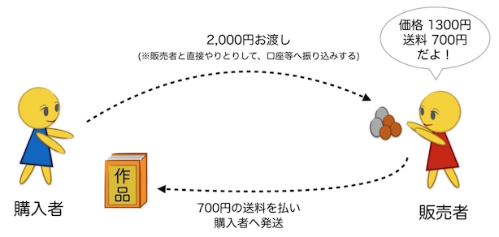
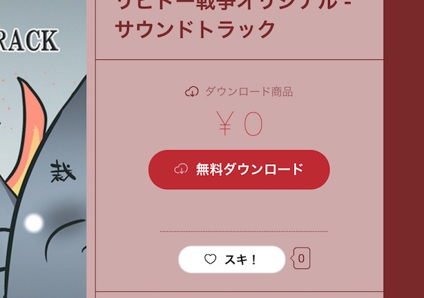

創作活動向けネットショップサービス「BOOTH」は何が良くて何がダメなのか？
ピクシブに行くと、たまに目にするBOOTHというサービス。BOOTHは、同人誌や音楽CD、ゲームやオリジナルグッツなどの作品を頒布するための仕組み、ネット上にオリジナルのブース(ショップ)を作るための販売サービスです。
このサービス、ただのネット販売サービスというわけでなく、あくまで「創作活動をしている人たちが使うこと」を想定しています。そしてそれがゆえに、マニアックな利用用途が想定され過ぎて複雑です。私も初めて使った時は、開設すらままなりませんでした。
しかし理解さえすれば、多くの同人サークルやクリエーター、アーティストが求めることを幅広く実現してくれることに気づきます。同人や二次創作から、オリジナル系。グッツ制作、アダルト系コンテンツ、ハンドメイドな人たちやサウンドクリエーターに至るまで、様々な分野の文化をうまくカバーしてくれています。だからこそ、機能が複雑になり過ぎたのでしょう。
では、BOOTHを使えば一体どう幸せになれるのでしょうか？ざっくりとまとめると、以下の3つが強みだと考えています。
1. 販売手数料0円で作品を頒布できる
BOOTHの魅力は、なんといっても手数料の低さです。例えば、他のサービスの販売手数料は、同人系サービスだと2〜4割、ハンドメイド系だと1〜2割が相場になりますが、BOOTHは無料です。初期費用や月額利用料も不要です。
創作の世界では、コミケをはじめ、様々なイベントでカジュアルに作品の売買が行われています。金銭のやりとりもまた、作品を作った人と欲しい人の間で直接的に行われることが普通です。
BOOTHもまた、ただ作品を紹介し、販売者と購入者で直接やりとりして、商品の取り引きを成立させることを許しています。ただ作品とその価格を掲載するだけ、ということも無料できるのです。これに購入者が反応し、販売者にコンタクトをとって互いに直接的に作品交換を行うことがあっても、BOOTHは一切そこに関与しないようです。創作系イベントの文化が、うまく扱えるようになっているわけですね。

とはいえ、最近はネット上でこの方法によって取り引きされることはあまりありません。ネット上の不特定多数を相手に取り引きを行うと、金銭トラブルや、口座情報のような個人情報漏洩のリスクが高くなってしまいます。ヤフオクでも、こういう悩みを抱えている人が多いようですね。
で、近年はこの問題を解決しようと「エスクロー決済」という手段が一般的になっています。間に信頼の置ける仲介者を置き、金銭のやり取りを代行してもらうのです。そもそも、購入者であればクレジットカードやコンビニ支払いといった普段活用する手段で支払いが行え、販売者側も銀行振り込みといった一つの手段で受け取りが行いたいところですが、個人間でのやりとりだとなかなかそうはなりません。
BOOTHでは、これらの決済を取りまく問題を全て片付けてくれる仕組みを「決済の代行サービス」として提供しています。そして、そのサービスを使う場合に、BOOTHはクレジットカード手数料や銀行手数料、システム利用料などをまとめて「手数料」として振込金額から差し引きます。ただ、その比率も「購入者が支払った料金 x 3.6% ＋ 10円」と、そこそこに低い設定になっています。
例えば、商品の価格が1,300円、送料が700円だった場合。BOOTHは購入者から、合計金額である2,000円を受け取ります。そこからクレジットカード手数料や銀行手数料、システム利用料などをまとめて「決済手数料」として扱い、82円(＝2,000円 × 3.6% ＋ 10円)を差し引きます。結果、販売者には残額の1,918円が渡されます。
この例は、購入者から販売者へ直接作品を発送するような取引方法である「自家通販」の一例です。ただ、自家通販は作品のパッキングや配送業者への依頼や在庫の管理など、多くの作業を販売者側に求めます。取引数が多くなると、手がまわらずパンクしてしまうこともあります。また、作家さんには女性の方が多いのですが、住所バレを気にしている人も多かったりします。実際にトラブルになったという話も聞いたことがあります。
こうした問題を解決するのが、BOOTHの「倉庫サービス」です。倉庫サービスでは、商品の在庫管理から発送までを、全てBOOTH側で引き受けてくれます。倉庫の維持費用は基本的に無料ですが、購入者が商品を買った場合に、商品のサイズに応じて320〜700円の送料を購入者に請求します。例えば、1300円の商品を販売し、700円の送料が発生した場合。商品価格と送料の合計金額である2,000円から、決済手数料の82円(＝2,000円 × 3.6% ＋ 10円)が差し引かれ、さらにそこから送料700円が差し引かれ、販売者には1,218円が渡されます。
ただし、商品があまりにも売れない場合は例外です。具体的に、3ヶ月間も倉庫に商品を置いていたのに2割も捌けなかった場合は、1,000円の倉庫使用料が発生します。売れ行きによって、倉庫には適量の商品を置いておくことが求められています。また、倉庫への商品を送る送料も、販売者側で持たなくてはいけません。それにしても、基本的な維持費が無料というのは、販売者側にとってメリットが大きいことなように思えます。
BOOTHは販売手数料が0円というのは、いいことだとは言い切れません。それは逆にデメリットになることもあります。販売手数料が0ということは、普通なら広告はまず打てないでしょう。つまり作品のPRは、ショップを開設したオーナーに委ねられることになります。
とはいえ、クリエーター自身が強い宣伝力を持っていることはよくあることです。流行りどころの二次創作やアダルトコンテンツとかだと話は別ですが、マイナーなコンテンツを扱っている人には決してそのメリットは小さくないはずです。規模のある同人サークルなんかでは、計画的にプロモーション活動を行わないと採算があわないケースもあるので、この場合も有用になるでしょう。向いている人には向いているサービスといえます。
2. 無料アップローダーとして利用できる
BOOTHは、グッツや同人誌、音楽CDからゲームまで、幅広い作品を頒布できるよう配慮されています。ファイルのダウンロード機能も付いています。そして、BOOTHが手数料を徴収するのは、倉庫や商品の発送、決済を代行させた時だけです。では、音楽や同人誌のデジタルファイル、CG集やゲームのようなダウンロード販売に対して、価格に「0円」を設定した場合はどうなるでしょう？決済も倉庫からの発送も不要になるため、BOOTHはただの無料ファイルアップローダーになります。

合わせ技もいくつかあります。例えば、同人ゲームを頒布したい場合、体験版には0円、製品版には価格を設定すれば、体験版の配布と製品版の販売の両方を、一つのショップ内で提供することができます。
この無料アップローダー機能は、あらゆる商品の販売時に「おまけファイル」として追加することができます。それこそ、紙の同人誌や音楽CDを購入した方に、おまけとしてPDFファイルや音源ファイルをダウンロードさせることができるのです。
例えば、紙の同人誌を買ってくれた人に、商品が届くまでの間も読めるように、PDF版をダウンロード提供したり。音楽CDを買ってくれた人には、デジタルデータをダウンロード提供したり、といったことができます。実際の商品が家に届くまでの間、購入者を暇にさせるでなく、ダウンロード版で楽しんでもらうことができます。
もっと応用すると、例えば、同人誌を買ってくれた人に、おまけとして追加ストーリーをダウンロード提供したり。音楽CDには、追加曲をダウンロード提供したり。小説だとちょっとした短編集をダウンロード提供したり…と、特典のようなものをダウンロードファイルとして提供することができます。それはまるで、同人誌即売会という販売コストが低い場所で、会場限定グッツをつけることで現地購入を促すように。BOOTHという手数料が低い場所で、限定配布ファイルをつけることでBOOTHでの購入を促す「現地特典」として活用することができます。
3. 在庫を抱えずに販売できる
創作活動をしている人の悩みといえば、高い印刷料や在庫リスクです。BOOTHにはこれらの問題を、「pixivFactoryの活用」と「倉庫に後から入荷」の2つの手段で解決します。
BOOTHには、イラストからグッツを作れるサービス「pixivFactory」という姉妹サービスがあります。pixivFactoryの特徴は、オリジナルグッツを一つからでも製造できるという点です。pixivFactoryとBOOTHを連携すれば、在庫を持たずにグッツを販売することができます。
ただし、一つからの製造となると、やはり一つあたりの製造原価は高くなります。買い支えが求められるようなマイナージャンルにとっては救世主と言えますが、ある程度の数がでそうな商品は、まとめて作って安くを求めたいところでしょう。事前にいくつ売れるか把握して売れる分だけ製造するという、「受注生産」したいと考えるのがごくごく自然なことです。実際に、抱き枕カバーなどの高額なグッツを扱うサークルでは、「予約受付」という名の実質的な受注生産が広く行われています。
これを解決するのが、BOOTHの倉庫サービス機能についている「倉庫に後から入荷」というフラグです。これを使えば、購入希望者に対して事前に購入受け付けを行い、受付数が上限に達したたタイミングで、一気に印刷し倉庫へ発送し販売することができます。少なくとも何人買うのかがわかっているのですから、在庫を余分に抱えることはなくなります。
こちらもやはり、想定より数がでなかったケースがちょっとしたリスクになります。ただ、従来の予想のつかない状況で印刷を行うよりは、リスクを下げることに貢献してくれるでしょう。
さいごに
BOOTHはクリエーターやアーティストたちが活動する現場が求めていることを実現しようと、様々な機能があたえられています。作品を気軽にみてもらいたい！という用途にも使えるので、創作に関わる人はBOOTHで自分にあった使い方を探ってみるのもいいかもしれません。
私個人としても、世の中の作品は家の押し入れなんかに眠らせておくんじゃなくて、せっかくだからネットで見えるようにして欲しい。求めている人の手の届くに場所にいて欲しいなぁ、なんて思ってます！私の大好きな妖怪モノの作品は、きっとどっかの絵師さんの押入れに眠っているはず。